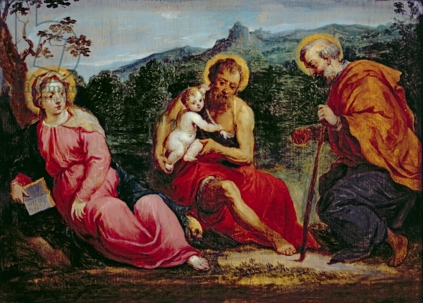
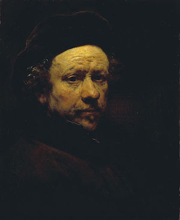
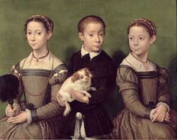

 The Holy Family with Saint Elizabeth and the Infant Saint John the Baptist by David Teniers 'the Younger', one of the tax-exempt heritage assets on the HMRC database CC BY 2.0, [Wikimedia Commons](https://commons.wikimedia.org/wiki/Category:Taxexemptheritageassets#/media/File:DavidTeniersafterParisBordone-HolyFamilyinaLandscapewithJohnthe_Baptist.jpg “Wikimedia").
About
The UK’s least-known publicly accessible art collection – including over 36,000 paintings, rare books, ceramics, items of furniture and other works – is held by private owners in exchange for tax benefits.
Open Inheritance Art aims to bring this collection out of the shadows.
"Our site takes so-called 'tax-exempt heritage assets' and tries to turn them back into works of art. In this way we hope to make these extraordinary collections more visible and encourage people to visit and photograph them,” says Jo Pugh, Open Inheritance Art founder.
The idea is that this, in turn, will encourage more engagement and access, and increase visits to works under the scheme – some of which are rarely seen. The project could also enable some works to be digitised for the first time and released as open content.
Open Inheritance Art could have benefits for many people
For Her Majesty’s Revenue and Customs the platform can help enrich the basic tax data with Wikidata and highlight errors or inconsistencies, allowing them to improve their own data.
For taxpayers the platform can help inform judgement around whether or not tax relief for national heritage assets scheme constitutes value for money.
For art historians the platform can help to identify ‘sleepers’, ie works that are not considered to have been created by the world-class artist who in fact did create them. There could be many hidden treasures that we are yet to discover, like the £20m Madonna composition by Raphael, which was assumed to be a £20 copy, as reported in the Guardian.
The platform also helps art owners to check they are respecting their obligations and offers them a way to contribute content about works in their possession.
Open Inheritance Art’s work in progress can be seen at openiart.uk.
The team
Open Inheritance Art is run by a team of students at the University of York.
Jo Pugh, Human Computer Interaction research group, Department of Computer Science (@mentionthewar)
Matthew Kemp, Interactive Media, Department of Theatre, Film and Television
Jake Colbeck Hutchinson, Interactive Media, Department of Theatre, Film and Television
Collection highlights
Portrait of Desiderius Erasmus of Rotterdam with Renaissance Pilaster
Artist: Hans Holbein the Younger
Location: National Gallery, London
Description: Dated as 1523 this oil on wood portrait features Europe's most celebrated 16th Century humanist scholar, Desiderius Erasmus surrounded by items which reflect his interests and profession. The portrait is painted by accomplished portraitist Hans Holbein, also famed for his portrait of Henry VIII.
OIA Link
Wikimedia image link
{kind=link}
Self Portrait with Beret and Turned-Up Collar

Artist: Rembrandt van Rijn
Location: Scottish National Gallery, Edinburgh
Description: Painted in 1959, oil on canvas self-portrait. Despite years as a successful painter this portrait was painted a year after Rembrandt’s financial failure including the repossession of his home and possessions. Rembrandt paints himself with a compellingly intense stare, sunken eyes, and intricate skin imperfections, on a darkened canvas.
OIA Link
Wikimedia image link
{kind=link}
Three Children with Dog / Two Sisters and a Brother of the Artist

Artist: Attributed to Sofonisba Anguissola
Location: Corsham Court, Wiltshire
Description: This oil on panel group portrait dated as 1590, comprises of two sisters, a brother of the artist and a dog. It is part of a collection owned by Lord Methuen at Corsham Court in Wiltshire and painted by Sofonisba Anguissola, an Italian renaissance painter whose paintings inspired many women to pursue high profile painting careers.
OIA Link
Wikimedia image link
{kind=link}
Background
Her Majesty’s Revenue and Customs has a public database of works under its tax relief for national heritage assets scheme, but it is hard to find and not especially easy to use.
"Browsing the database does not give a strong reason to want to see any of these works, which are by some of the world’s greatest artists and craftspeople," says Jo.
But how do you publicise an art collection when you can’t show the art and don’t know where most of the items are physically located?
"We have worked hard to mine the data so we can attempt to highlight where works are made permanently publicly available, in National Trust properties or other stately homes," says Jo.
"[We also want to] try to show other artworks by the same artist, even where we can’t show the precise work in question. In this way – and by making it a little easier to contact more private owners through their intermediaries to arrange access – we hope to ensure these works are more widely seen than they are at present."
The Guardian has estimated the cost of the scheme to be at £1.2bn – a lot of money if no one ever sees the results.
 Jan VIII 'the Younger', count of Nassau-Siegen with his family oil on canvas by Anthony van Dyck, one of the tax-exempt heritage assets on the HMRC database. CC BY 2.0, [Wikimedia commons](https://commons.wikimedia.org/wiki/Category:Taxexemptheritageassets#/media/File:John,CountofNassau-Siegenwithhisfamily,byAnthonyVan_Dyck.jpg “Wikimedia commons").
Jan VIII 'the Younger', count of Nassau-Siegen with his family oil on canvas by Anthony van Dyck, one of the tax-exempt heritage assets on the HMRC database. CC BY 2.0, [Wikimedia commons](https://commons.wikimedia.org/wiki/Category:Taxexemptheritageassets#/media/File:John,CountofNassau-Siegenwithhisfamily,byAnthonyVan_Dyck.jpg “Wikimedia commons").
About the data
HMRC’s adoption of the open government licence is what has made it possible to build the Open Inheritance Art site. But the project wouldn’t have been possible with the fruits of years of work by Wikimedians on Wikipedia, Wikidata and Wikimedia Commons.
“We are able to carry out our enrichment only because of this extraordinary well of open content,” says Jo.
“I have worked with Wikimedia UK for a number of years but this is the first time I have made significant use of the work of the Wikidata project, and I’m incredibly impressed by its reach and power. [It's amazing] to be able to use data from Hungarian Wikipedia in order to provide more information about an obscure French historian whose work is held in a stately home in England. I’m starting to see how linked data at scale can deliver in the field of cultural heritage.”
In its next phase, the Open Inheritance Art project is intended to begin to contribute new content to these projects, in the form of both crowdsourced images and text.
Methodology
“I scraped the HMRC website some time ago but I think if it wasn’t for the ODI’s call, that data would have sat on my hard drive for a good long while,” says Jo. “The ODI Showcase provided the impetus to recruit some student developers and a fantastic design agency, namely Bivouac here in York who have a great track record in cultural heritage work.”
Putting the tax data – in all its messiness – together with those designs and attempting to gather new data simultaneously was difficult to do in a short time. The team relied heavily on Wikimedia’s APIs to help them. “They are the ones who should really be congratulated for the work their volunteers have done,” says Jo.
As the Open Inheritance Art team track down images of the works, they add them to their own website and to the Wikimedia Commons ‘Tax exempt heritage assets’ page.
“I suspect at the end we’ll will still have a certain amount of kludge to clear up but I suppose a data project like this is never quite finished,” says Jo.
“There will always be more cleanup we could do or further enrichment we could try: I’d love to be able to link the data on rare books in the collection to editions in the Internet Archive so they can be read online, but we just haven’t had the time yet.”
Collaboration
As part of the ODI Showcase, the ODI supported Open Inheritance Art with funding, mentoring and communications guidance. As Jo explains:
“The ODI have really provided the rocket fuel to get this project aloft. They have been incredibly positive and supportive and I hope we will continue to work with their wider network within government in the future.”
What next?
The Open Inheritance Art team are keen for the public to use the openiart.uk website, make appointments to view works, take pictures of them and send the team the results.
The team hope that owners will also provide images of the artworks in their care. They will continue to work on their data in the hope that the database will soon start to look like any other art collection.
That said, "it would be great to be able to more sophisticated data analysis of the collection," says Jo. "How much of it is on (semi-) public display? We estimate about 50%, but we’re still not sure. How many works in the collection are by female artists? We don’t know. As we keep cleaning up the data, I hope we’ll be able to find [these things] out.
"HMRC could use more carefully controlled vocabulary about objects, break data into more discrete fields and, I suspect, require owners to provide an image of every work. I hope we can have productive discussions with them about how their data can be made more suitable for reuse."
The ODI Showcase supports projects that demonstrate how open data can be used to bring longstanding benefits to individuals, organisations and society. The ODI provides grant funding, mentoring and promotional support to maximise these impacts.